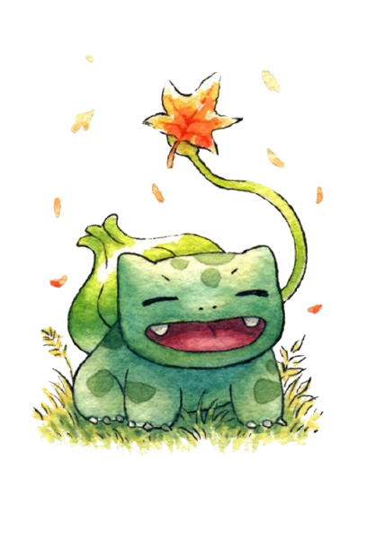

|  |
Bulbasaur fue introducido en la primera generación.
Es uno de los Pokémon iniciales que se puede elegir en la región de Kanto, junto a Charmander y
Squirtle.
Tras nacer, crece alimentandose durante un tiempo de los nutrientes que contiene el bulbo de su lomo.
Su nombre proviene de la palabra inglesa bulb (bulbo) y de la palabra griega saur (reptil o lagarto).
El bulbo de Bulbasaur le ayuda a defenderse de los enemigos y desde él puede disparar ataques tales como rayo solar y drenadoras entre otros movimientos.
No es muy raro encontrarlo en jardines y zonas cercanas a fuentes de agua. Se los puede atraer con el aroma de las flores. Según el anime, una vez al año,
cuando estos Pokémon están listos para evolucionar suelen reunirse en grandes cantidades en un Jardín Misterioso mientras hacen un ritual a la luz de la luna junto
a un gran Venusaur.
|